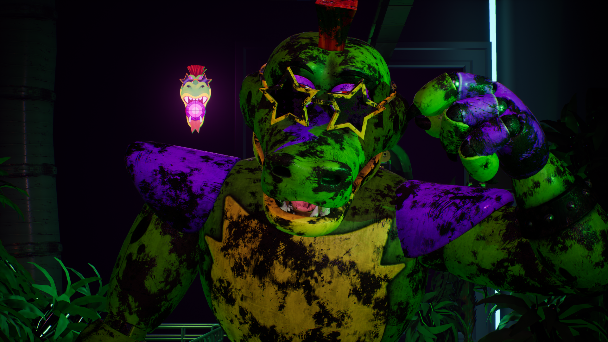
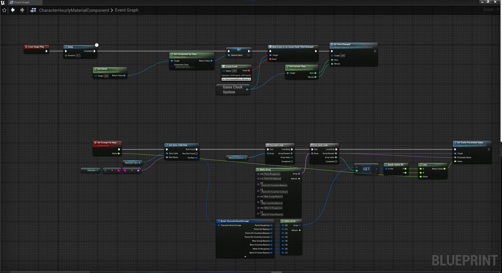
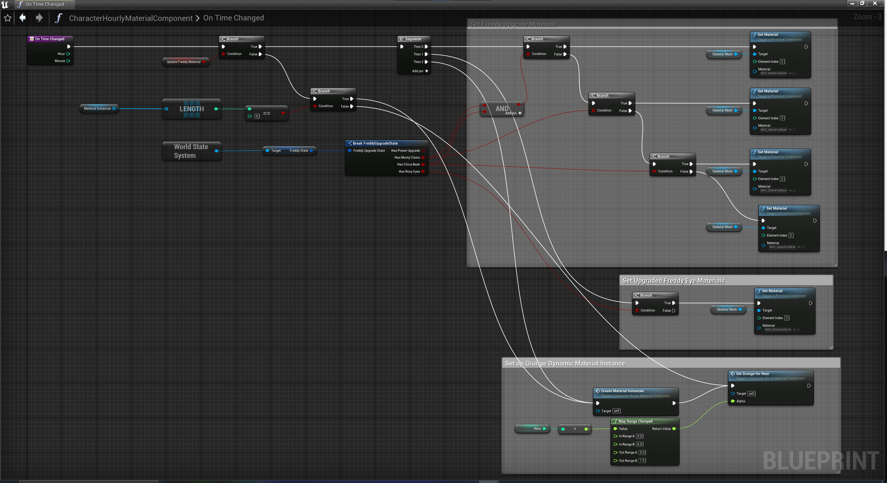

This mod for Five Nights at Freddy's Security Breach brings FNaF AR's wear and tear material over to Security Breach.
Ordinarily, the game uses around 3 different texture sets for every character's damage through the night.
With a modified CharacterHourlyMaterialController Blueprint and a modified material I used for Special Delivery: VR, I was able to pull this off.
This mod will be compatible with mods that others make that alter the character's textures as this only affects the material code.

